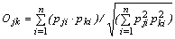
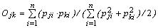
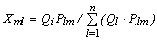
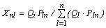
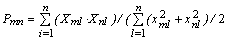

Ecopath-predicted values for Prey overlap and Predator overlap are displayed in separate forms under the Niche overlap node (under Parameterization) in the Navigator window.
Numerous overlap indices have been suggested for quantification of how species overlap. Hurlbert (1978) and Loman (1986) summarized different types of indices, and described their properties based on a number of hypothetical examples.
Here a simple niche overlap index is adopted and it is shown how it can serve as a starting point for the development of a new (predator) niche overlap index incorporating predation. The procedure involved in deriving a predator niche overlap index (from a prey niche overlap index) should be generally applicable, i.e., not limited to the type of index presented below.
Pianka (1973) suggested the use of an overlap index derived from the competition coefficients of the Lotka-Volterra equations. This index, Ojk , which has been used for many descriptions of niche overlap, can be estimated, for two species/groups (j) and (k), from

Eq. 29where Pji and Pki are the proportions of the resource (i) used by species (j) and (k), respectively. The index is symmetrical and assumes values between 0 and 1.
A value of 0 suggests that the two species do not share resources, 1 indicates complete overlap, and intermediate values show partial overlap in resource utilization.
Closer examination of the Pianka overlap index shows it to have an unwanted characteristic, and it is therefore slightly modified here. If one of the groups (say j) only overlaps with one other group (k) then Pji will be zero for all values of (i) but (i) = (k), where it will reach a value of 1. In such a case, the denominator of Equation (1) will always be 1, and the overlap index will equal Pki, whereas a value between Pki and Pji would be more reasonable. This behavior is caused by the geometric mean implied in the denominator of (1), and can be circumvented by the use of an arithmetic mean. For this (1) is changed to

Eq. 30where the index and all of its terms can be interpreted as above. This version of the Pianka overlap index is used in the subsequent calculations.
The niche overlap index can be used to describe various kinds of niche partitioning. Here attention will be focused on the trophic aspects. In this case, the Pki and Pji in (2) can be interpreted as the fraction prey (i) contributes to the diets of (j) and (k), respectively.
Using an approach similar to that above, it is possible to quantify the predation on all preys (m) and (n) by all predators (l), and to derive a ‘predator’ composition, estimated from

Eq. 31and

Eq. 32Here Xml can be interpreted as the fraction the predation by (l) contributes to the total predation on (m), while Ql is the total consumption for predator (l). The predator compositions given above correspond to what Augoustinovics (1970) defined, in the context of input-output analysis, as ‘technical coefficients’.
Based on the predator composition a ‘predator overlap index’ (P) can be derived as

Eq. 33the values of this predator overlap index range between 0 and 1 and can be interpreted in the same way as those of the prey overlap index, given in (2).
In the present version, only one type of niche overlap index is incorporated, but both predator and prey niche overlap is given for this index. Given users' interest, more indices may be included in later versions of EwE.